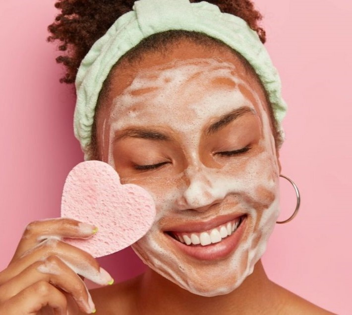
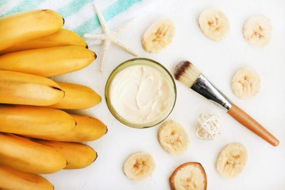
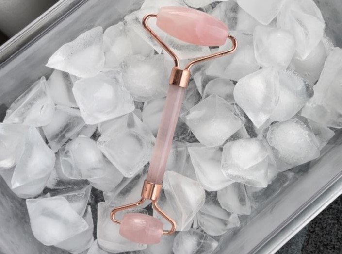
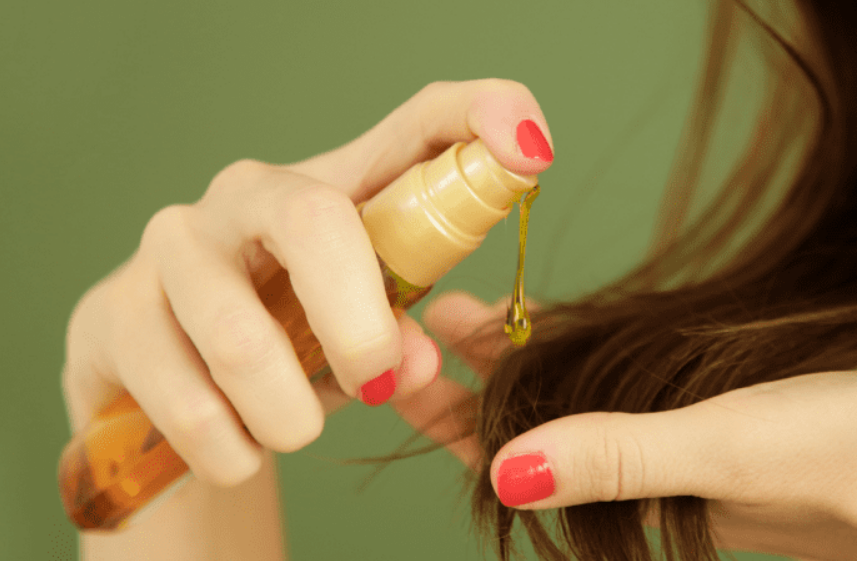
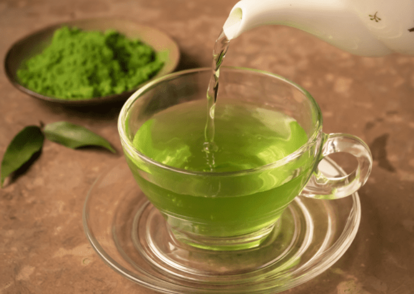
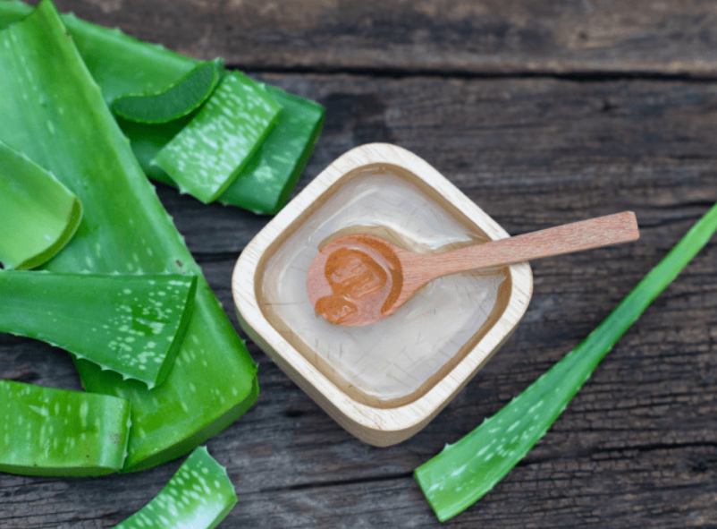
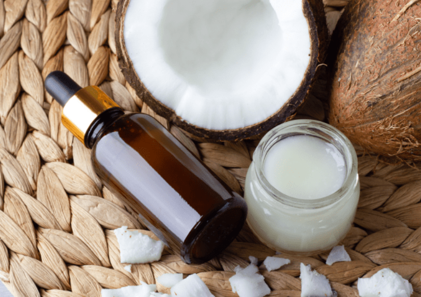

6 Dicas de beleza para incluir na rotina de cuidados
Quer dicas para sua pele facial, para seu cabelo, para a sua pele corporal e para tudo que seja útil na
sua rotina? Aqui você encontra! Confira as 6 diquinhas de beleza que vão revolucionar seus
dias!

Vamos lá?
1 - Máscara Facial de banana e azeite

Essa fruta é ótima para prevenir
acnes e desacelerar o aparecimento das rugas na pele. Ela também auxilia as peles que são afetadas pela
psoríase. O azeite é responsável pela hidratação da camada superficial da pele. Essa é uma mistura
natural, econômica e muito fácil de fazer.
2 - Gelo no rosto

O gelo é útil para muitas coisas, principalmente para o rosto! Aplicar gelo ou mergulhar o rosto em uma
bacia com água e gelo, melhora olheiras, espinhas e ainda fecha os poros, auxiliando bastante na
aplicação de maquiagem.
3 - Óleo de rícino

Forte aliado dos fios capilares, o óleo de rícino hidrata, combate as caspas e as indesejadas pontas
duplas. Além disso, ele também pode ser usado nas sobrancelhas e cílios. Sua composição é repleta de
antioxidantes, ômega 6 e 9 e vitamina E, que são os grandes responsáveis pelos benefícios.
4 - Chá verde para oleosidade

Ele auxilia os cabelos na retirada de sua
oleosidade e os presenteia com muito brilho. Ele fornece melhorias à microcirculação periférica e
automaticamente, normaliza a permeabilidade dos fios. É sempre bom ter um chá verde em casa!
5 - Babosa para quedas de cabelo

A babosa é utilizada para diversas finalidades nos cabelos. É perfeita para cabelos secos, ressecados,
quimicamente tratados, com seborreia e até mesmo caspas. Ela possui nutrientes, minerais, enzimas e
vitaminas que nutrem o couro cabeludo, fortalece os cabelos e, consequentemente, evita a queda capilar.
6 - Hidratante com óleo de coco

Muito amado no mundo da beleza, o óleo de coco pode ser utilizado em todo o corpo. Ele fornece grandes
vantagens quando utilizado em sua forma orgânica. Mantém hidratação da pele do rosto, corpo e mãos,
retira ressecamentos dos pés e é superindicado para quem possui xerose cutânea.